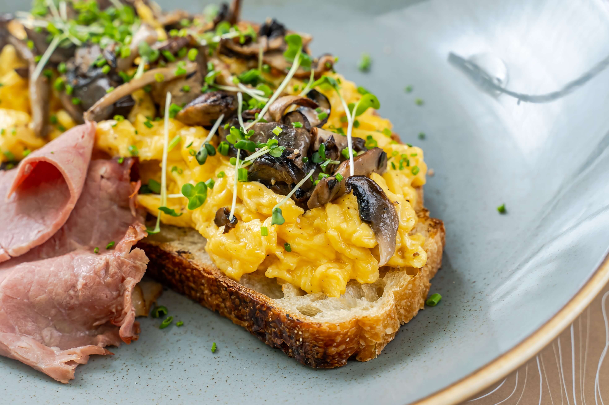

French Omelette

Description
A true French omelette, or omelet as we Americans call it, is just eggs and butter, no filling. The egg is folded for a soft, tender texture. It's 10% ingredients and 90% technique, so it does take a bit of practice to perfect.
Ingredients
- 3 large fresh eggs
- ½ teaspoon cold water
- ¼ teaspoon kosher salt
- 2 tablespoons fresh lemon juice
- 2 tablespoons unsalted butter, divided
- 1 pinch cayenne or white pepper to taste (Optional)
Steps
- Whisk together oil, soy sauce, vinegar, lemon juice, Worcestershire sauce, Dijon mustard, garlic, and pepper for marinade in a 9x13-inch glass baking dish until thoroughly combined.
- Add flank steak to the baking dish; turn several times to coat thoroughly with marinade. Cover, and refrigerate for 2 to 6 hours, or up to 12 hours if you have time.
- Make the ricotta mixture.
- When ready to cook, preheat an outdoor grill for medium-high heat and lightly oil the grate.
- Remove steak from the marinade and shake off excess. Discard the remaining marinade.
- Cook steak on the preheated grill for about 5 minutes per side, or to desired doneness.
- Remove from the grill and let rest for 5 minutes before slicing and serving.